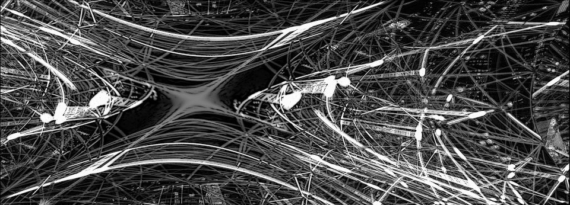

Intro

Computer systems are demanding. Customers have high expectations regarding their user experience and quality. Developers want to have an agile environment allowing fast paced development. System engineers and operators strive to have reliable product always running, easy to change and grow to accomodate increased workload.
To satisfy those demands modern systems need to be distributed and rely on broad technology stack which make them inherently complex.
DARS Systems has been established to help in building Distributed Available Reasonable Scalable Systems.
Our focus is on providing guidance in architecture, development, deployment and system operation.
Services
We offer consulting services in the following subjects:
product and data migration
system architecture focused on reliability, resiliency, scalability and serviceability
AWS cloud architecture and deployment
performance validation and tuning
destructive tests
operation support in instrumentation, alerting, incidents resolution and prevention, contingency planning
capacity planning
resource utilization analysis and optimization
About
We are experienced developers and system engineers with solid expertise acquired during work for major companies in travel and betting industry. For years we have been dealing daily with large scale heteregenous online systems with strict performance and availability requirements. Those systems process tens thousands online transactions per second in peak hours. They are spread across few data centers and cloud vendors, running on a few thousands of machines, hundreds of databases, queues and dozens of load balancers. Adding nontrivial business needs makes the entire environment complex and challenging.
It requires a lot of thought, passion and effort to make all this seamlessy working so customers can always rely on products without interruption.
We are happy to share our expertise and lessons learned from major activations and numerous incidents so your system is prepared and always ready.
Address
DARS Systems Sp. z o.o.
ul. Sarego 18/5
31-047 Krakow, Poland
Email: office@darssystems.com
Tax Identification Number (NIP): 6762556271
Satistical ID (REGON): 381566746600000
National Court Register (KRS): 0000752976
Share capital: PLN 5000
Elements